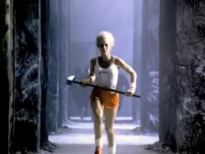

苹果公司1984年超级碗广告
《一九八四》（Nineteen Eighty-Four）是英国左翼
作家乔治·奥威尔
于1949年出版的政治小说。小说刻画了一个令人感到窒息和恐怖的，以追逐权力为最终目标的假想的极权主义
社会。这部小说与英国作家赫胥黎
著作的《美丽新世界
》，以及俄国作家扎米亚京
著作的《我们
》并称反乌托邦
的三部代表作。这部小说至今已经被翻译成62种语言，全球销量超过3000万册，是20世纪影响力最大的英语小说之一。
1984年的世界被三个超级大国所瓜分——大洋国、欧亚国和东亚国，三个国家之间的战争不断，国家内部社会结构被彻底打破，均实行高度集权统治，以改变历史、改变语言（如“新话”—Newspeak）、打破家庭等极端手段钳制人们的思想和本能，以具有监视与监听功能的“电幕”（telescreen）控制人们的行为，以对领袖的个人崇拜和对国内外敌人的仇恨维持社会的运转。
故事中主人公所在的国家大洋国只有一个政党——英格兰社会主义，按照新语，简称英社（IngSoc）。社会也根据与党的关系被分为核心党员、外围党员和无产者（群众）三个阶层。政府机构分为四个部门：和平部负责军备和战争，友爱部负责维持秩序、镇压和严刑拷打，真理部负责宣传、文教和篡改历史，富裕部负责生产和分配。按照新话，分别简称为和部、爱部、真部、富部。
在大洋国“真理部”从事篡改历史工作的外围党员温斯顿因为在工作中逐渐对其所处的社会和领袖“老大哥”（Big Brother）产生怀疑，并与另一位外围党员裘利亚产生感情，因而成为思想犯，在经历了专门负责内部清洗的“友爱部”的思想改造之后最终成为了“思想纯洁者”。
在这部作品中，奥维尔
深刻分析了极权主义社会，并且刻画了一个令人感到窒息和恐怖的，以追逐权力为最终目标的假想的未来社会，通过对这个社会中一个普通人生活的细致刻画，投射出了现实生活中极权主义
的本质。
作者同时借小说主人公温斯顿的心理及语言描写，表达了一种对民众麻木心理的“恨铁不成钢”愤懑，仿佛大洋国的所有人只有他自己意识到了自己所深处的社会的罪恶嘴脸，其他人却都置若阁闻，漠不关心。作者的文字间总流露着一种对极权统治，对乌托邦理想的讽刺，虽然最终的结局是失败的，但其中的斗争过程是具有永恒价值的。小说中一系列的精辟的语言“谁控制过去就控制未来；谁控制现在就控制过去”、“自由即奴役”、“正统思想就是没有意识”等等，充分表达作者内心思想的同时，也给我们敲响警钟。主人公温斯顿与裘利亚的地下爱情，虽然没能经受住严刑的拷打，但这爱情绽放的火光给予我们以人性向善的美好希望，温斯顿与裘利亚的爱情失败了，但他们毕竟在严酷的现实面前曾经绽放过，可以想见，未来的类似的“爱情”终将绽放并结出硕果。